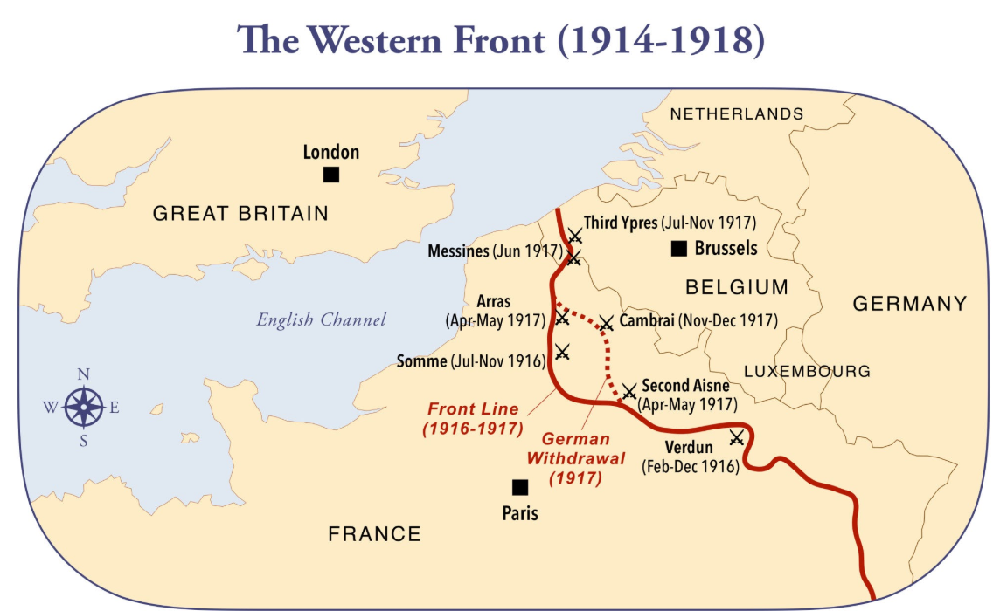

Gebruik de lagenkiezer rechtsboven op de kaart om de Historische WOI Loopgravenkaart (1914–1918) in of uit te schakelen.
Onderstaande afbeelding geef een overzicht van de linies ten opzichte van Abbeville en het Somme-estuarium (afbeelding: overzichtskaart.png):
